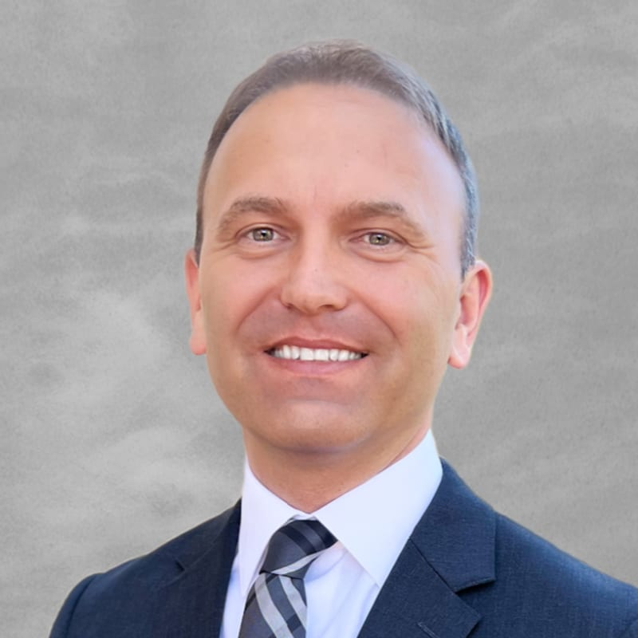
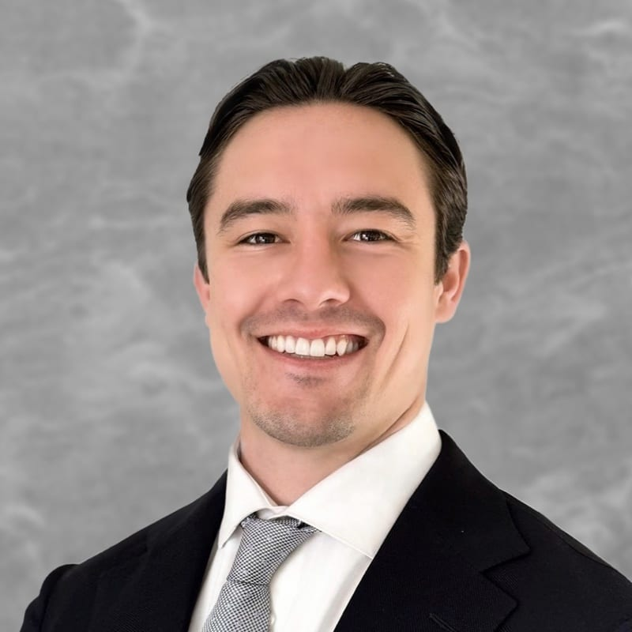

ASIC is built on relationships. These are the finance professionals and firms who give their time, expertise, and mentorship to the next generation.

LPL Investment Advisor Representative & Founder
Rock Martin Private Wealth Management →Marty Urbanowicz, CFP®, is a LPL investment advisor representative, lecturer, and founder of Rock Martin Private Wealth Management. With more than 17 years of experience and a national client base, his expertise in wealth and asset management allows him to share innovative financial strategies that are pivotal when working toward financial prosperity.
Marty first showed a profound interest in investing during his youth, which led him to earn a Bachelor's degree in economics and finance from the State University of New York at Buffalo, with a minor in engineering science providing an analytical foundation to his business background. He later attained the prestigious Certified Financial Planner® certification.
His dual tax and financial expertise underpins a tax-efficient approach to retirement and wealth planning. As an Enrolled Agent, he is an authorized tax practitioner empowered by the U.S. Department of the Treasury to represent taxpayers before all administrative levels of the IRS. His article "Strategically integrating tax brackets and taxation of social security to increase cash flow" was published in the Spring 2013 issue of TAXPRO Journal by the National Association of Tax Professionals.
Marty is a member of the National Association of Tax Professionals and the Certified Financial Planning Association. In his free time, he enjoys reading and the outdoors, playing tennis, golf, and camping with his wife, Nicole, and their son and twin daughters.
Marty has made a meaningful impact on ASIC's development, contributing to the organization's investment philosophy and speaking at several Q&As to refine members' outlook on investing as a whole. He also served as a judge and played a key role in the development of Willow Canyon's Wildcat Tank Competition.

CFP®, Enrolled Agent & Wealth Advisor
Rock Martin Private Wealth Management →Tyler is a CERTIFIED FINANCIAL PLANNER® professional, Enrolled Agent, and Wealth Advisor at Rock Martin Private Wealth Management. His work centers on delivering thoughtful, integrated financial planning for clients with complex needs. He focuses on aligning investment strategy, tax planning, and disciplined decision-making into a clear framework designed to support both current priorities and future goals.
His interest in finance began early, sparked by his Great Uncle Ed, who introduced him to the power of compound interest using a single piece of lined paper. That original letter still hangs in his office as a reminder of the impact of consistency, patience, and informed choices, principles that continue to shape how he approaches planning.
Tyler earned a Bachelor of Science in Finance with a certificate in Business Economics from Northern Arizona University. He holds Series 7, 65, and 63 securities licenses through LPL Financial, along with an Arizona Life Insurance License. In addition to his CFP® certification, Tyler is also an Enrolled Agent, allowing him to integrate tax strategy directly into the financial planning process.
Outside of work, Tyler values time with his family and enjoys life with his fiancée, Sidney, and their pup, Stella. He enjoys staying active, traveling, reading, golf, and chess.
Tyler has played an instrumental role in ASIC's competitive environment, judging for and helping organize the Willow Canyon Wildcat Tank Competition.
Wealth Advisor
Edward Jones →Andrew Gauer, CFP®, is a Certified Financial Planner at Edward Jones who partners with business owners, executives, and high-net-worth families to simplify complexity and create clarity in their financial lives. His practice focuses on business exit planning, estate strategies, charitable giving, and tax-efficient wealth management, helping clients preserve what they've built and align their wealth with their mission.
His disciplined process integrates all aspects of his clients' financial worlds by collaborating closely with CPAs, estate attorneys, and M&A professionals. Through this coordinated approach, he ensures each plan is both technically sound and personally meaningful. He works with a select group of families, business owners, and executives to design solutions that preserve capital, minimize taxes, and create lasting impact across generations.
Outside the office, Andrew is an avid cyclist and runner who often trains alongside his Vizsla, a father of two boys and a collector of vintage cars.
Andrew has played a vital role in the development of ASIC's research methodology, Thesis-Based Investing, introducing members to the use of top-down market analysis to better understand macroeconomic trends and encouraging them to stay informed through finance news outlets. He also helped organize and served as a judge in the Willow Canyon Wildcat Tank Competition.
Banking & Financial Services
MidFirst Bank has played a meaningful role in introducing ASIC members to the essential concepts of personal finance. Through their MoneyMoments financial education program, they have presented to the organization on key topics including investment accounts, savings accounts, budgeting, and personal money management.